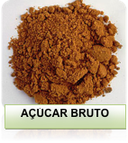
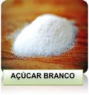
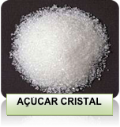
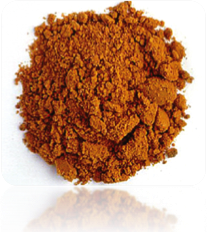

Caro (a) aluno (a),
Seja bem vindo ao tópico 3 da nossa aula 05 do Curso, “A QUIMICA NOSSA DE CADA DIA” esperamos que aproveite bastante nossa aula, pois iremos tratar de um assunto interessante, Tipos de açúcar que consumimos.
Bons estudos!
TIPOS DE AÇÚCAR QUE CONSUMIMOS
AÇÚCAR REFINADO GRANULADO
Ver efeito .doc aula 5 topico 3 pagina 13
VEJAMOS AS IMAGENS A SEGUIR:
  
Figura 6: açúcar bruto
Fonte: http://revistasaboresdosul.com.br/painel/index.php/files/large/1039
Figura 6: açúcar bruto
Fonte: http://www.cookthink.com/reference/1943/Meet_the_sugars
Figura 8: açúcar cristal
Fonte: http://revistasaboresdosul.com.br/painel/index.php/files/large/1039
Figura 9: açúcar demerara
Fonte: http://www.cookthink.com/reference/3394/What_is_Demerara_sugar
VEJAMOS ALGUNS TIPOS DE AÇÚCAR:
Açúcar mascavo: Açúcar de cor amarronzada, que não passa pelo processo de branqueamento, cristalização e refino (como o açúcar cristal). Possui sabor mais forte que o açúcar cristal, com sabor semelhante ao do melaço e da rapadura. É utilizado para a produção de pães, bolos e biscoitos integrais e granolas.
Açúcar confeiteiro: Tem grânulos bem finos, mais que o refinado, e cristalino. É destinado à indústria alimentícia, sendo muito utilizado no preparo de bolos, glacês, coberturas, suspiros, etc.
Açúcar light: É constituído pela mistura de açúcar refinado e edulcorantes. Tem proporcionalmente menor conteúdo calórico e maior poder adoçante do que o açúcar refinado.
Ver .doc EFEITO PROFESSOR NA LOUSA NOVO aula 5 topico 3 pagina 16
Açúcar líquido invertido: O açúcar líquido é um adoçante natural de sacarose apresentado na forma líquida em uma solução inodora, límpida e cristalina, obtido pela dissolução de açúcar sólido em água, com posterior purificação e descoloração, o que garante a esse produto alta transparência e limpidez.
Figura 10: açúcar mascavo
Fonte: http://comosereformaumplaneta.wordpress.com/2009/11/27/acucar-mascavo/
Figura 11: xarope de açúcar invertido
Fonte: http://www.heavenskitchen.com.br/heavens-detalhesreceita-358.htm
Responsáveis: Prof. Katiane Arrais Jales, Prof. Maria Cristina Martins Ribeiro de Souza
Centro de Educação a Distância do Ceará - CED